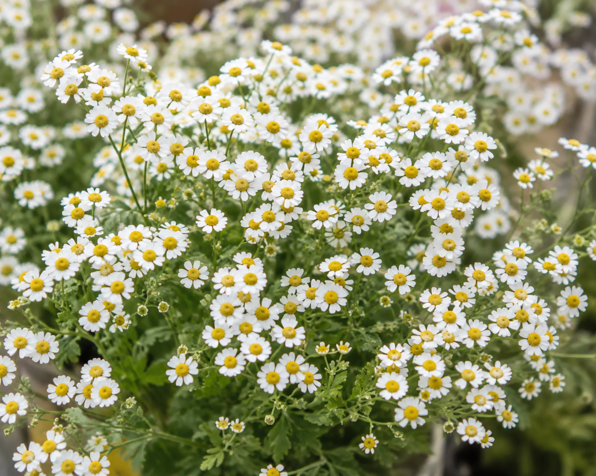
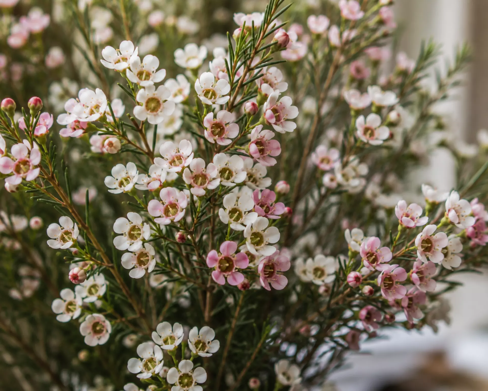
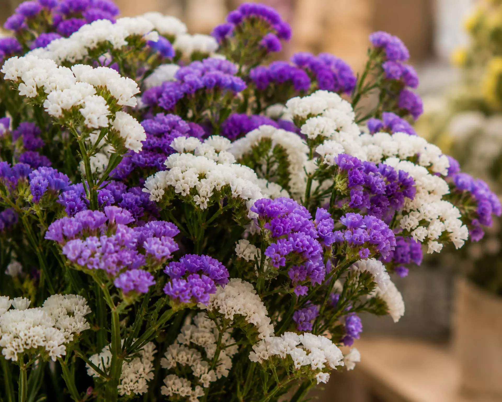
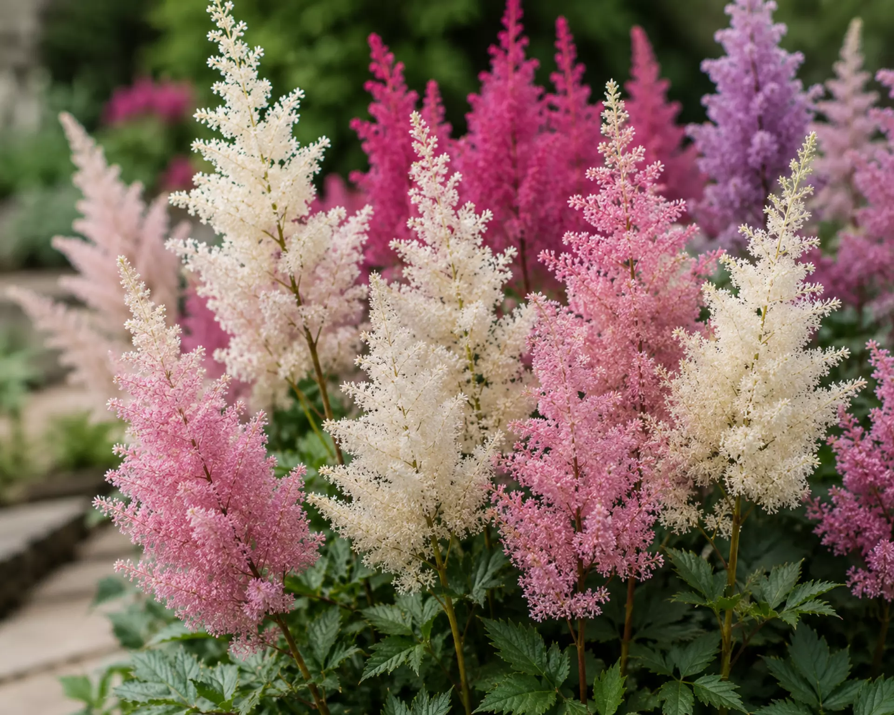

Baby's breath (Gypsophila) has been the go-to wedding filler for decades — but rising demand, seasonal shortages, and evolving bridal trends mean more couples and planners are looking for alternatives that are just as delicate, more budget-friendly, or longer-lasting.
In this guide, we break down 25 flowers that give you the same airy, romantic texture as baby's breath — including fresh, dried, and bulk-order options — so you can find the right fit for your bouquet, centerpiece, or mandap decor.
The Best Look-Alikes (White & Delicate)
If you love the ethereal "cloud" effect of baby's breath but want something slightly more unique, these small white flowers are the perfect substitutes.
1. Queen Anne's Lace (Ammi Majus)

Baby's Breath vs Queen Anne's Lace: While gypsophila features tiny round balls, Queen Anne’s Lace grows in wide, flat clusters (umbels) that look like delicate lace. It’s perfect for garden-style, fine-art weddings.
2. Orlaya (White Lace Flower)
Similar to Queen Anne's lace but with larger outer petals, Orlaya provides a stunning romantic texture that looks far more premium than standard baby's breath.
3. Feverfew (Matricaria)

Feverfew looks like hundreds of miniature daisies. It provides a sweet, wildflower aesthetic that is an excellent baby's breath alternative for a rustic bouquet or centerpiece.
4. Wax Flower (Chamelaucium)

Wax Flower vs Baby's Breath: Wax flower has a slightly more structural, woody stem with tiny, five-petaled blossoms. It lasts exceptionally well out of water and smells like citrus!
5. Bouvardia
Bouvardia features clusters of small, star-shaped white flowers. It is more opaque than gypsophila, making it a great white filler flower when you want a more solid block of white.
Sturdy & Budget-Friendly Alternatives
If you're buying wholesale for a massive 500-guest wedding and need a cheap alternative to baby's breath that covers a lot of ground, look at these options.
6. Statice (Limonium sinuatum)

Baby's Breath vs Statice: Statice is papery, incredibly durable, and comes in vibrant colors as well as white. It is often much cheaper and holds up perfectly in hot weather.
7. Caspia (Limonium bellidifolium)
Baby's Breath vs Caspia: Caspia has a very similar "smoky" or "cloud-like" texture to gypsophila, but it generally has a slightly purplish-silver tint. It's an excellent, cheap baby's breath alternative.
8. Limonium (Sea Lavender)
Baby's Breath vs Limonium: Limonium has a taller, more branching structure and tiny blooms. It fills out arches and mandaps beautifully and is extremely cost-effective.
9. Solidago (Goldenrod)
While usually yellow, there are now dyed white or pale varieties of Solidago that offer massive volume for a fraction of the cost of premium wedding flowers.
10. Trachelium
This flower forms dense, cloud-like domes of microscopic blossoms. White trachelium provides a unique, modern texture that is heavier than baby's breath.
Unique & Textural Substitutes
Want a sustainable baby's breath alternative or something that adds a surprising twist to boutonnières and cakes?
11. Astilbe

Astilbe looks like soft, feathery plumes. It is far more romantic and luxurious than baby's breath, making it a top choice for high-end bridal bouquets.
12. Rice Flower (Ozothamnus)
Tiny bead-like clusters that literally look like grains of rice. It's a fantastic baby's breath alternative for a boutonnière because it is sturdy and unique.
13. White Veronica
Instead of the round cloud of gypsophila, Veronica gives you an elegant, tapered spire of white micro-blooms, perfect for adding height to centerpieces.
14. Lily of the Valley
The ultimate luxury alternative. It features tiny, fragrant, bell-shaped flowers. It is much more expensive than baby's breath but unmatched in elegance for bridal bouquets.
15. Astrantia
A star-shaped, delicate flower that looks like a beautiful weed. It adds a "just-picked" garden feel to any arrangement.
16. White Tweedia
Starry, soft flowers that are slightly fuzzy. Tweedia is delicate and works beautifully as an accent in fine-art floral designs.
17. Heather (Erica)
Tiny bell-shaped flowers clustered tightly on woody stems. White heather adds fantastic texture and meaning (it traditionally symbolizes protection and good luck).
18. Leptospermum (Tea Tree)
Similar to waxflower, with tiny cup-shaped blooms on woody stems. Very long-lasting.
19. Thryptomene
A beautiful native Australian filler with arching branches covered in tiny, delicate white or pale pink flowers.
20. Eriostemon (Fairy Wax Flower)
Features star-shaped white flowers with a lovely scent, serving as a highly durable alternative for long events.
Dried & Greenery Alternatives
For modern, boho, or sustainable weddings.
21. Dried Bunny Tails (Lagurus)
If you want the fluffiness of a dried baby's breath alternative, bunny tails are soft, whimsical, and 100% sustainable.
22. White Amaranth (Upright)
For a unique, fuzzy texture that stands tall in centerpieces, white upright amaranth is striking.
23. Seeded Eucalyptus
Instead of tiny flowers, use the tiny, textural seeds of the eucalyptus plant. It provides that "dotted" look without using actual petals.
24. Dried Lunaria (Honesty)
Translucent, paper-thin seed pods that look like silvery coins. It provides an ethereal, glowing alternative to baby's breath.
25. Baby's Tears Greenery
For a non-toxic baby's breath alternative (especially if you have pets at your wedding), opting for delicate, trailing greenery like Baby's Tears or Maidenhair fern can provide the same visual lightness.
How Event Decorators Source Bulk Flowers
Successful event decorators rely on farm-direct sourcing and wholesale flower supply to ensure quality and control costs. By partnering directly with a bulk flower supplier like Fleur Vine, decorators guarantee export-grade, fresh-cut filler flowers delivered with strict cold-chain logistics right to the venue.
Ready to explore unique filler flowers for your next large event?
Fleur Vine supplies premium, farm-fresh Waxflower, Statice, Caspia, and seasonal fillers in bulk to decorators and planners across India.